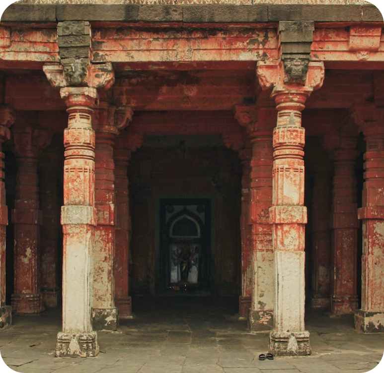
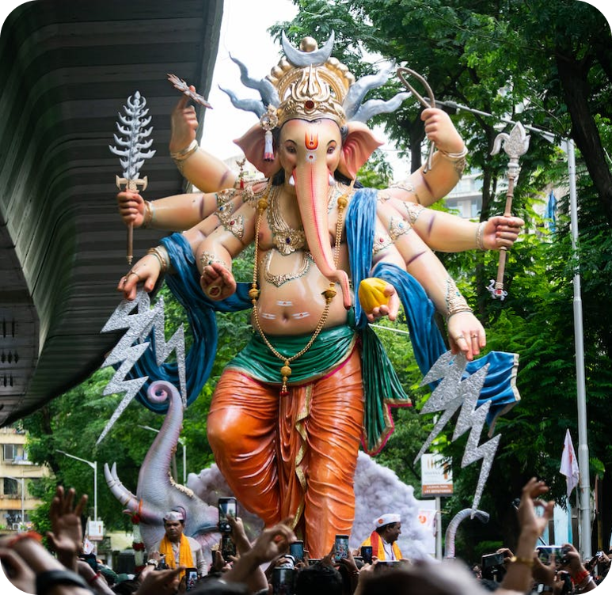
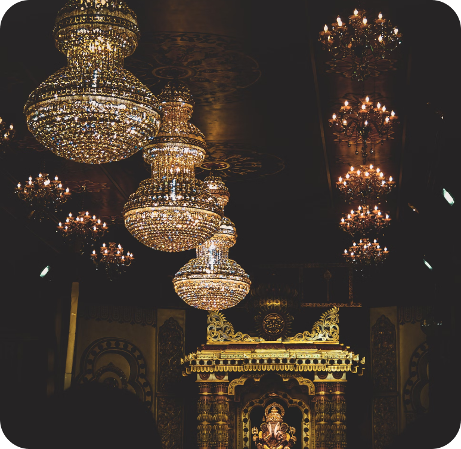
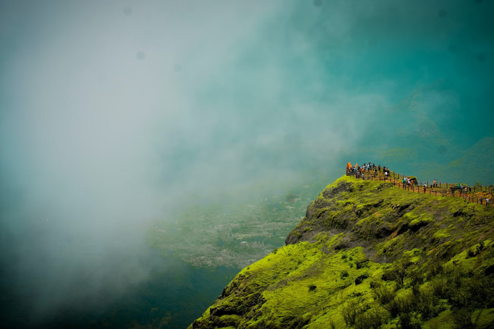

History
Heritage
Facts

Maharashtra is a state in the western region of India. It is India's second-most populous state and third-largest state by area. The region that comprises the state has a long history dating back to ca. 1300–700 BCE, although the present-day state was not established until 1960 CE.
After independence from the British in 1947, the state of Maharashtra was formed in 1960 after a campaign to create a Marathi-speaking state in the 1950s.
Maharashtra, a culturally rich state in western India, boasts a diverse heritage dating back centuries. It encompasses an array of traditions, languages, art forms, and historical landmarks.
The state cherishes its vibrant folk music and dance, including Lavani and Tamasha, epitomizing the spirit of the land. Maharashtra has been a cradle of prominent social reformers like Dr. B.R. Ambedkar, shaping social and political discourse.
Maharashtra has a long history dating back to ancient times. The region was part of various ancient kingdoms, including the Maurya and Gupta empires.
The famous rock-cut caves of Ajanta and Ellora, both UNESCO World Heritage Sites, are located in Maharashtra. These caves date back to around the 2nd century BCE and showcase exceptional art and architecture.


How To Get To Maharashtra
By Road
Maharashtra has a well-developed road network with National Highways, State Highways, and local roads connecting different cities and towns within the state and to neighboring states.
By Train
Maharashtra has an extensive railway network operated by Indian Railways. Major cities like Mumbai, Pune, Nagpur, Nasik, and Aurangabad have well-connected railway stations.
By Air
Maharashtra has several major airports including Chhatrapati Shivaji Maharaj International Airport (Mumbai), Pune Airport, Nagpur Airport, Aurangabad Airport, and Shirdi Airport. These airports are well-connected domestically and internationally, making air travel a convenient option.
HOME
ABOUT
MAP
CONTACT
PRIVACY POLICY
PLACES TO VISIT
Historical
Religious & Spiritual
Parks & Recreation
Educational
Tours & Package
Copyright 2023 MH City

About
Places To Visit
Map
XPLOREMH
